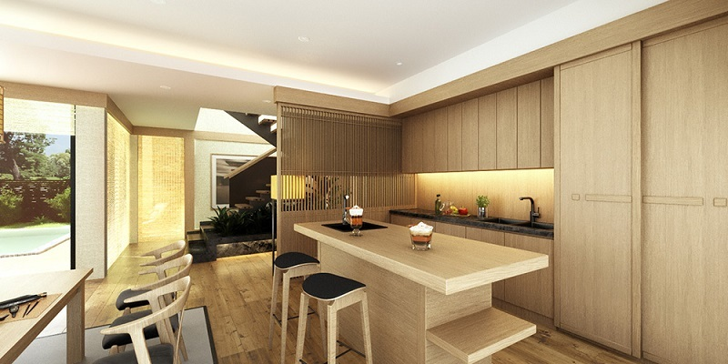

xã Bảo Yên, huyện Thanh Thủy, tỉnh Phú Thọ
Wyndham Thanh Thủy là khu nghỉ dưỡng nổi tiếng và đẳng cấp bậc nhất ở Phú Thọ. Nơi đây được biết đến với các căn biệt thự hạng sang ẩn mình giữa thiên nhiên. Resort sẽ mang đến cho du khách một kỳ nghỉ đích thực. Hãy cùng Tico Travel khám phá những điều thú vị nhất về hệ thống phòng nghỉ cùng hệ tiện ích tại điểm lưu trú này nhé.
Liên hệ 0973.559.290 để biết thêm thông tin
Cách Hà Nội chỉ hơn 1 giờ lái xe, Wyndham Thanh Thủy là nơi nghỉ dưỡng cuối tuần cực kỳ tưởng được nhiều người lựa chọn. Nằm tách biệt khỏi phố xá ồn ào, địa điểm này rất phù hợp cho những ai muốn tránh xa sự náo nhiệt và muốn tận hưởng sự thư thái giữa thiên nhiên hùng vĩ của Phú Thọ.
Resort được xây dựng tích hợp giữa nhiều loại hình lưu trú khác nhau mang tiêu chuẩn cao cấp và khang trang. Từng phòng nghỉ và căn hộ tại đây đều thiết kế với sự tận tâm và tinh tế, đảm bảo mang lại trải nghiệm thoải mái và đẳng cấp cho quý khách.
Ngoài việc cung cấp các hạng biệt thự, Wyndham Lynn Times Thanh Thủy còn nổi tiếng với hệ tiện ích chất lượng. Lưu trú ở resort này, bạn sẽ thoải mái trải nghiệm ở các quán bar, nhà hàng, phòng gym, hồ bơi, spa, nhất là khu khoáng nóng. Wyndham Thanh Thủy hứa hẹn sẽ khiến cho kỳ nghỉ của du khách thêm phần đặc biệt và đáng nhớ.
Địa chỉ: xã Bảo Yên, huyện Thanh Thủy, tỉnh Phú Thọ Nằm ở huyện Thanh Thủy, Wyndham Resort Phú Thọ có vị trí khá đặc địa, gần với các địa điểm du lịch hấp dẫn. Nghỉ dưỡng ở đây, bạn dễ dàng đi tham quan khu du lịch đảo Ngọc Xanh, Đền Hùng, K9 Đá Chông.
Từ Hà Nội, bạn có thể lựa chọn di chuyển đến Wyndham Thanh Thủy bằng xe khách, xe máy. Mỗi phương tiện đều có một ưu điểm riêng, vì vậy tùy vào yêu cầu, điều kiện của mình để bạn chọn cách thức đi lại vừa ý nhất. Nếu đi xe máy, du khách nên kiểm tra kỹ xe, chuẩn bị google map để tránh tình trạng đi lạc nhé.
Lấy cảm hứng thiết kế từ Nhật Bản, Wyndham Thanh Thủy được mệnh danh là thiên đường nghỉ dưỡng với đầy đủ các tiện ích ấn tượng. Kiến trúc nơi đây kết hợp giữa vẻ đẹp hiện đại và truyền thống Á Đông, Việt Nam và Nhật Bản đã góp phần đem đến một khu resort đẳng cấp hàng đầu ở Phú Thọ.
Ngay khi bước vào, du khách có thể bị choáng ngợp trước quy mô rộng rãi và cực kỳ hoành tráng. Tone màu trầm làm chủ đạo giúp cho điểm nghỉ dưỡng này không chỉ nổi bật vẻ sang chảnh mà còn vô cùng dễ chịu và thân quen.
Địa điểm này gồm có khu khách sạn và khu biệt thự, cung cấp đủ hạng phòng lưu trú. Bạn sẽ vô cùng hài lòng về cách thiết kế tiện nghi, tinh tế. Khuôn viên của dự án Wyndham Thanh Thủy được điểm tô bởi sắc xanh của vô vàn cây xanh hay hồ nước trong veo. Vì thế, quanh năm ở resort luôn mát mẻ giúp bạn được tận hưởng những giây phút thư thái. Điểm đặc biệt của resort chính là hệ thống nguồn khoáng nóng chất lượng.
Với 2 tòa khách sạn, Wyndham Lynn Times Thanh Thủy đem đến hơn 2000 phòng nghỉ dưỡng hạng 5 sao. Những căn hộ thiết kế chỉn chu, nội thất được bố trí cẩn thận và chu đáo. Các kiến trúc sư khéo léo sắp xếp, decor từng chi tiết nhỏ để khiến phòng ngủ thêm phần rộng rãi và đẹp mắt.
Tại đây chia thành căn hộ 1 giường đến 3 giường, bạn có thể lựa chọn một phòng phù hợp với tài chính cũng như nhu cầu của mình. View phòng nghỉ hướng ra thiên nhiên xanh mát, du khách sẽ có một kỳ nghỉ vui vẻ và lý tưởng. Hạng căn hộ thường sẽ lý tưởng dành cho cặp đôi, người đi công tác hay gia đình nhỏ.
Hạng phòng tiếp theo tại Wyndham Thanh Thủy được nhiều người lựa chọn đó là Residential Suite 2 phòng ngủ. Hạng này được đánh giá với nét đẹp thanh lịch, sang trọng. Diện tích biệt thự này là 150m2 có kiến trúc mang nét đặc trưng của xứ sở hoa anh đào. Residential Suite có thể chứa được 4 người lớn hoặc gia đình nhỏ 5 người. Phòng khách cung cấp đủ bàn ghế sofa, tivi, máy pha cà phê nên quý khách hoàn toàn yên tâm nhé.
Không chỉ ấn tượng trong cách thiết kế, Residential Suite của Wyndham Thanh Thủy Resort còn có ban công riêng. Du khách nghỉ ngơi ở đây sẽ có cơ hội ngắm nhìn khung cảnh thiên nhiên xung quanh, nhâm nhi tách trà và trò chuyện cùng người thân. Lưu trú ở hạng phòng này, bạn cảm giác được sự tiện nghi và rộng rãi.
Đến với Wyndham Thanh Thủy, bạn chưa biết nghỉ dưỡng ở đâu thì có thể book hạng Residential Suite 3 phòng ngủ. Đây là hạng phòng có quy mô lớn lên đến 210m2, được đánh giá là căn biệt thự diện tích rộng nhất, thiết kế đẹp nhất và quy mô lớn nhất.
Hạng phòng vừa đem đến phòng ngủ siêu rộng, vừa có phòng khách và phòng bếp riêng. Phòng khách là nơi mà cả gia đình bạn cùng nhau quây quần trò chuyện, xem phim, còn phòng bếp dùng để nấu các bữa ăn ngon. Ngoài ra, nơi đây còn có khu vực nướng bbq sân vườn đảm bảo khiến mọi du khách đều thích thú. Phòng Residential Suite của khu nghỉ dưỡng Wyndham Thanh Thủy chứa được nhóm bạn 6 người.
Nếu có cơ hội đến nghỉ dưỡng ở Wyndham Thanh Thủy, bạn đừng quên trải nghiệm ở khu nhà hàng Nhật. Với cách decor mang tính nghệ thuật, khu nhà hàng sở hữu nét đẹp của đất nước mặt trời mọc. Bạn có thể ghé nhà hàng Kyoto Deli hay OHAYO để thưởng thức vô vàn món ăn ngon.
Nhà hàng sẽ phục vụ thực đơn đa dạng gồm buffet hải sản, món Nhật hay món Âu. Những món ăn địa phương tại đây cũng hứa hẹn không làm du khách phải thất vọng.
Wyndham Thanh Thủy là điểm đến lý tưởng cho những ai đang tìm kiếm sự thư giãn trọn vẹn giữa thiên nhiên tươi đẹp. Nằm ở khu vườn xinh đẹp, khu bể bơi khoáng nóng ngoài trời hứa hẹn mang đến cho khách hàng những khoảnh khắc thú vị và thư thái.
Bên cạnh đó, khuôn viên của resort còn có bể bơi khoáng trong nhà giúp bạn ngâm mình tận hưởng thư giãn. Bể bơi đảm bảo an toàn, mực nước vừa phải nên du khách yên tâm nhé.
Không gì có thể so sánh với việc thả mình vào bể bơi khoáng nóng, cảm nhận từng giọt nước ấm áp chảy dọc theo cơ thể và đánh thức mọi giác quan của bạn. Bể sục khoáng thảo dược tiếp tục nâng cao trải nghiệm này với hương thảo dược dịu nhẹ, giúp cơ thể và tinh thần sảng khoái.
Một dịch vụ chăm sóc sức khỏe nổi bật ở Wyndham Thanh Thủy phải kể đến đó chính là khu xông khô. Sau khi tắm khoáng nóng, bạn hãy tới phòng xông khô để tận hưởng cảm giác nhẹ nhõm, giải tỏa căng thẳng.
Với nhiều phương pháp khác nhau như xông hơi thảo dược, xông khô truyền thống hay xông tuyết lạnh, xông đá muối Himalaya, du khách sẽ cảm thấy sự dễ chịu. Xông khô không chỉ giúp thanh lọc cơ thể mà còn có tác dụng làm đẹp da, giảm mụn rõ rệt.
Nếu bạn muốn đến trải nghiệm ở Wyndham Lynn Times Thanh Thủy thì đừng quên ghé thăm khu massage của resort nhé. Với đội ngũ kỹ thuật viên chuyên nghiệp, bạn sẽ cảm thấy vô cùng thư thái sau khi thử liệu trình massage.
Du khách có thể sử dụng dịch vụ massage chân hoặc massage toàn thân. Vừa nghe bài nhạc chill, vừa hít thở hương thơm thoang thoảng trong một không gian dễ chịu, có khi bạn chìm vào giấc ngủ lúc nào không hay.
Phòng thể dục ở Wyndham Thanh Thủy resort là nơi hoàn hảo cho du khách có nhu cầu tập luyện và duy trì sức khỏe trong thời gian lưu trú tại khách sạn. Với việc trang bị đầy đủ các thiết bị tập luyện tiên tiến và hiện đại, bạn sẽ được thỏa mãn nhu cầu tập gym của mình một cách hiệu quả và thoải mái.
Nghỉ dưỡng ở Wyndham Thanh Thủy Phú Thọ, bạn sẽ bị ấn tượng bởi thiết kế bể bơi vô cực. Tọa lạc ở tầng 30 của tòa khách sạn, bể bơi đem đến một tầm nhìn xịn sò, nơi mà bạn có thể thu trọn cảnh sắc núi non, sông nước cuồn cuộn. Du khách có cảm giác thích thú và mới lạ. Thư giãn ở bể bơi sau chuỗi ngày làm việc cũng khiến cho tâm hồn bạn thêm thoải mái.
Sky bar ở resort Wyndham Phú Thọ là địa điểm được du khách đánh giá cao. Không chỉ có tầm nhìn cực đẹp, sky bar còn gây ấn tượng với thiết kế cầu kính độc đáo. Nơi này thường được lựa chọn để tổ chức các bữa tiệc thân mật vui vẻ. Hơn nữa, ngày cuối tuần tại đây còn diễn ra nhiều hoạt động giải trí với nhiều tiết mục đặc sắc.
Nhằm mong muốn đáp ứng nhu cầu của du khách một cách tốt nhất, Wyndham Thanh Thủy cung cấp hệ thống các phòng sự kiện, hội họp sang trọng. Thiết kế cẩn thận trong từng chi tiết, âm thanh ánh sáng set up chỉn chu. Đây sẽ là không gian cho những buổi sự kiện quan trọng được diễn ra suôn sẻ và thành công.
Trước khi có nhu cầu đặt phòng Wyndham Thanh Thủy để nghỉ dưỡng, bạn hãy tham khảo kỹ trước các đánh giá của du khách. Dưới đây là vài resort chân thực nhất mà Tico Travel tổng hợp: Nam Đỗ: “Khu nghỉ dưỡng mới xây, vẫn đang trong quá trình hoàn thiện. Dịch vụ tốt, chu đáo, hiện đại. Khu vực onsen khá rộng, có bảng hiển thị nhiệt độ nước trong bể. Sau khi tắm khoáng, có thể trải nghiệm các phòng xông khô nóng, lạnh” Thúy Nguyễn: “Phòng xịn, đúng chuẩn 5 sao. Mình mới thuê ở đây để tổ chức tiệc công ty, không có gì để chê. 100 điểm. Nhất định sẽ quay trở lại nếu có cơ hội” Phương Anh: “Gia đình mình vừa có kỳ nghỉ dưỡng ở Wyndham Thanh Thủy Phú Thọ. Theo cá nhân mình thấy mọi thứ ở đâu đều khá ok. Phòng đẹp, tiện ích đầy đủ và có nhiều hoạt động giải trí”.
Nếu muốn book phòng tại resort, bạn hãy liên hệ theo thông tin bên dưới để được hỗ trợ tư vấn:
Địa chỉ: Xã La Phù, huyện Thanh Thủy, tỉnh Phú Thọ Nằm khá gần với Wyndham Phú Thọ là khu du lịch Đảo Ngọc Xanh. Quần thể sinh thái này có quy mô lớn, gồm nhiều loại hình giải trí khác nhau. Ghé thăm nơi này, bạn thỏa thích vui chơi ở bể bơi, khu trò chơi cảm giác mạnh, sân tennis. Trong khuôn viên của Đảo Ngọc Xanh còn có nhà hàng, phòng nghỉ để du khách có thể tận hưởng tối đa sự tiện ích.
Địa chỉ: Khu 6, xã Trung Nghĩa, huyện Thanh Thủy, tỉnh Phú Thọ Nếu bạn chưa biết nên đi đâu khi đến du lịch Thanh Thủy thì hãy tới Đền Lăng Sương. Di tích này là điểm đến cầu an, hạnh phúc và tài lộc. Dịp Tết đầu năm mới hay các ngày lễ rằm, rất nhiều du khách ở các địa phương lân cận ghé đến để chiêm bái. Đặc biệt, Đền Lăng Sương thường xuyên có nhiều hoạt động văn hóa để hấp dẫn khách du lịch như hội hát Xoan, kéo co,…
Địa chỉ: xã Địch Quả, huyện Thanh Sơn, tỉnh Phú Thọ Đồi chè Thanh Sơn là điểm đến hút khách bậc nhất ở Phú Thọ, sở hữu vị trí không quá xa so với khu nghỉ dưỡng Wyndham Thanh Thủy. Với cảnh quan thiên nhiên tuyệt đẹp, những đồi chè xanh trải dài tạo nên bức tranh đẹp mê hồn bao người ghé đến. Bạn tới đây sẽ thu trọn mọi thứ vào tầm mắt, vừa ngắm nhìn khung cảnh, vừa trải nghiệm hái chè. Đồi chè Thanh Sơn cũng là thiên đường dành cho tín đồ yêu thích check in.
Wyndham Thanh Thủy thực sự là điểm đến nghỉ dưỡng mà bạn không thể bỏ qua. Khu resort 5 sao xứng đáng trở thành nơi để du khách gửi gắm kỳ nghỉ của mình. Tico Travel mong rằng những thông tin review trên đây sẽ giúp ích cho chuyến du lịch Phú Thọ sắp tới của bạn.
Liên hệ: 0973.599.290 để nhận được ưu đãi đặt phòng sớm nhất !
Kết bạn Zalo qua số điện thoại 0973.599.290 hoặc quét mã QR trong ứng dụng Zalo
Nhấn vào màn hình để tắt